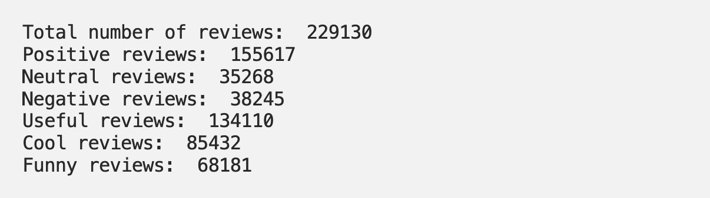
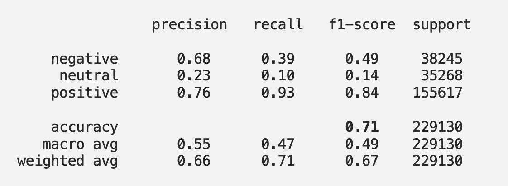

Project information
- Category: Natural Language Processing
- Client: Mentorship Project
- Project URL: Repository
What is Yelp?
Yelp is a popular online directory of local businesses from various industries: bars, restaurants, spas, gas stations etc. Results of a search query are filtered by geographical location, business type, price ranges, and unique features. The idea behind Yelp is for users to leave their rating and a review of their experience with an establishment. It can be a treasure chest of guidelines on how customers view your business, and what improvements can be made to see more happy customers. So, how exactly can Yelp reviews help us explore the satisfaction of our customers?
The Goal of this Project
My goal in this project is to explore the Yelp educational dataset in order to gain valuable insights of businesses working in a particular area, as well as perform sentiment analysis of the reviews, and make actionable recommendations to businesses that will help them understand customer needs, and monitor customer feedback. The last step of the project includes actually using machine learning to predict a sentiment of a review.
As part of the Business Case Analysis section of this project, I will focus on answering the following questions:
- What businesses are getting top reviews?
- Which categories of businesses are getting top reviews?
- How often do businesses get reviewed over time?
- How do the categories of trending and top reviewed businesses differ?
- Which business categories get bad reviews?
- What are the most common words in bad reviews?
What is Sentiment Analysis?
Popularly called ‘opinion mining’, the aim of Sentiment Analysis is to determine the overall contextual polarity of a review. In this sense, a review is a person’s reaction to their experience of a particular business. Sentiment analysis does not determine if a sentence is objective or subjective, fact or opinion. Results of said text analysis will be shown as positive, negative or neutral opinion.
To put this definition in perspective, I will show you an example of Sentiment Analysis on an actual random review and a rating from Crystal taken from the dataset. Here is what Crystal said about a certain restaurant, and how she rated it:
Crystal's Review: The pizza is just OK. Pretty crowded at lunch time and seating is a nightmare. Get the lunch special, you get a personal pizza slicer and a pan. Would get it to go if I didn't live in the west valley. Good idea to have a separate take out door but don't count on this place to be acceptable for those of us with disabilities to get around.
Crystal's Rating: 3
I used the NLTK VADER Sentiment Analyzer based on word2vec algorithm. It ranges from -1 being completely negative, to +1 being completely positive. Once I ran this review through the Sentiment Analyzer, I received the following result:
VADER polarity score of Crystal's review: {'neg': 0.0, 'neu': 0.843, 'pos': 0.157, 'compound': 0.8324}
The analyzer pretty much guessed it is a fairly neutral review (‘neu’ = 0.843), and the compound score, or the overall score, is pretty positive. Crystal seemed to like certain things, but other thing did not appeal to her as much. Would you say the sentiment analyzer’s score correctly guessed Crystal’s overall opinion?
Structure and the Data
The Yelp dataset is a collection of businesses, reviews, and user data, intended for learning purposes, published by Yelp. It contains over 8 million reviews for 200 thousand businesses in 10 metropolitan areas of the US. In this analysis, I will not be using the entire dataset. I will focus on businesses from the Phoenix, AZ metropolitan area, which was downloaded from data.world. It contains over 200K reviews, up until the beginning of 2013.
Please note that this article will contain snippets of code from the project, but not the entire script. You can find all additional information about the project and the code in this repository.
This project was done using Python, Numpy, Pandas, Matplotlib, Seaborn, spaCy, NLTK, and scikit-learn.
Business Case Analysis
Firstly, I would like to see the distribution of positive, negative, and neutral reviews. There is also an indicator if users found a review useful, cool, or funny. Let’s see how many reviews are there in these categories:
Positive reviews include ratings of 4 stars and higher. Neutral ratings are 3 stars, and negative 2 and 1 star. Prevalence of positive reviews does not make the dataset well-balanced. More than 60% of reviews are positive reviews, which means if you were to guess if a random review is positive or not, you will be right 66% of time. Let’s focus on extracting general insights about businesses from the dataset.
What businesses are getting top reviews?
The question is pretty straightforward: I assumed that top-rated businesses have a rating of 4 or higher, and at least 300 reviews. I decided to visualize at least 30 of the top businesses to get a perspective on the distribution of reviews:

The top three rated businesses are:
- Pizzeria Bianco (overall stars: 4.0) with 803 reviews
- Four Peaks Brewing Co (overall stars: 4.5) with 735 reviews
- Matt’s Big Breakfast (overall stars: 4.0) with 689 reviews.
Which categories of businesses are getting top reviews?
Now, from these top reviewed businesses, it would be useful to know what are the dominant business categories:

Almost the third of total categories in the top 30 reviewed businesses belong to Restaurants. Following categories include American (New), Bars, and Nightlife. It is clear that Restaurants are a dominant category when looking at top-rated businesses, as well as all categories in the dataset. However, looking at all categories Restaurants have a slightly smaller share, and is followed by Shopping, Food. There might be room for an assumption that people tend to review their experience with eating-out more than other consumer experiences. However, Restaurants and similar categories have a dominant share on Yelp, so this assumption might not hold entirely.

How often do businesses get reviewed over time?
Once I analyzed the dataset, I noticed that the year 2013 has only reviews for the first 5 days of the year. I decided this year will not be taken into consideration. Year 2005 contains reviews from March 2005, and will be excluded as well. Let’s see the trend of reviews per year:

Number of reviews per year show a positive linear climb which was expected. Let’s visualize the top ten businesses with most reviews, regardless of their rating:

What happens if we zoom in on a couple of businesses from the above list, and see how the number of reviews is distributed over years?

Highly reviewed businesses such as the Phoenix Sky Airport, and Pizzeria Bianco show a positive trend over the years. The randomly selected two businesses from the list, Joe’s Farm Grill and Postino Arcadia show a slightly different story: there was a steady positive trend of number of reviews up until the year 2010 and 2011, and the year 2012 recorded a drop in reviews for both establishments.
This steady growth in reviews can potentially show us these businesses value their customer’s feedback, and are creating — as well as actively pursuing — a good business environment.
Which business categories get bad reviews?
I defined a bad review as a review with a rating of 1. These are the top 7 categories of businesses that contain the highest number of bad reviews:

When looking at all categories of businesses that get less than 2 stars per review, the highest number of these reviews, almost 50%, goes to Restaurants, followed by Shopping, and Food. Now let’s see which businesses have the highest number of bad reviews:

By looking at categories of top 30 businesses with an aggregated business star less than 2, there is no difference in categories, except the presence of the Automotive category. The highest number of bad reviews goes to US Airways with 95 1-star review, whereas the mean number of 1-star reviews is 43. Again, this indicates that the dominant category in the dataset is Restaurants, and is most often reviewed.
What are the most common words in bad reviews?
I will finish this section of the project by analyzing the most common words in bad reviews across the entire dataset. The great thing about analyzing text is that you can gain impactful insights just by combining various analysis. I decided to visualize the distribution of the number of words in bad reviews. Remember, I define bad reviews as reviews with 1-star rating.

It appears the highest number of 1-star reviews are less than 200 words in length
One more additional insight regarding the type of words most present in 1-star reviews, called entities. They are usually referencing words like date, time, organizations, currencies, numbers and similar. Let’s visualize those entities:

Customers are often referencing the date or the time of their presence in the establishment, as well as the name of the organization.
Now, back to the original question of which words often appear in bad reviews. I did remove common words and punctuation from the reviews, which means that if a review contained ‘not good’ or ‘didn’t like’— that the negative clause ‘not’ was removed, or the contracted negative n’t, and the word ‘good’ or ‘like’ was kept as part of the analysis.

Sentiment Analysis
As described in the beginning, the goal of our Sentiment Analysis of Yelp reviews is to determine if the review is positive, negative or neutral. NLTK Vader proved to be fairly good in this sense, I achieved an accuracy score of 0.71.
This score was calculated by comparing the true label of the reviews (positive/negative/neutral) with the predicted label that was formed based on the compound score taken from the VADER Polarity score, also called the compound label. I have taken positive reviews to have the score of 4 and 5, neutral reviews have the score of 3, and negative reviews are all reviews that are starred with 1 or 2. I have also based my compound label as negative being less than 0.5, neutral if the score is less than 0.5, and positive for all other compund scores. The confusion matrix I got from the analysis looks like this:

Here is the Classification report that helps us clarify the multi-class matrix we are seeing:
It is clear that the class “positive” has outnumbered the “negative” and the “neutral” classes — therefore the pretty good precision, recall and overall f1-score! Having in mind that the neutral class was formed by only one review (3) the result of the prediction is understandable. I find the results of precision and overall f1-score for negative reviews to be satisfying.
Predicting the Sentiment
As part of the project, I performed prediction and eveluation of the reviews using the following classifiers: Logistic Regression, Multinomial Naive Bayes, Decision Tree, Random Forests, KNN, AdaBoost, and XGBoost. My decision to use these algorithms was based on using a set of different classifiers, from simple to complex, and then evaluate the performance of each algorithm. Prior to fitting models, I have vectorized the data using TfidfVectorizer, and a StandardScaler as my Feature scaling tool. Here are the results of said classifiers:

XGBoost and Logistic Regression displayed best results in the predictive modeling, therefore I would go with using these two algorithms to enhance the results with hyperparameter tuning.
Conclusion
The Yelp Dataset is quite rich on potential it has to help businesses understand customers and their needs. As such, I would definitely continue working on getting better results with sentiment prediction. The prediction results in this project have showed there is room to enhance performance of used algorithms, or use a Neural Network and compare results.
As far as the exploration of the dataset goes, I can conclude that customers are more than willing to rate and review their experience with an establishment, especially restaurants and shopping establishments. The trend of sharing your experience is on the rise, and businesses can benefit greatly from such detailed analysis of reviews and ratings their customers leave.